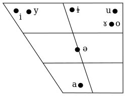

e - tip of the tongue raised high to the back part of the hard palate, lips are stretched
i - previous consonnant is not softened
zi, сi, si, zhi, chi, shi, ri - i pronounced with consonant overtone
ian, yan - pronounced [iɛn]
o - tip of the tongue raised high to the back part of the hard palate, lips are rounded
bo, po, mo, fo - pronounced [puo], [pʰuo], [muo], [fuo]
ong - pronounced [uŋ]
ü - tongue as [i], lips as [y]
after j, q, х - ü is written as u
после l, n - ü is written as ü
ai, ei, ао, ou - falling diphthongs, first vowel is pronouced strong, second vowel is pronouced weak
uo - raising diphthongs, first vowel is pronouced weak, second vowel is pronouced strong
er - as american-english [er]